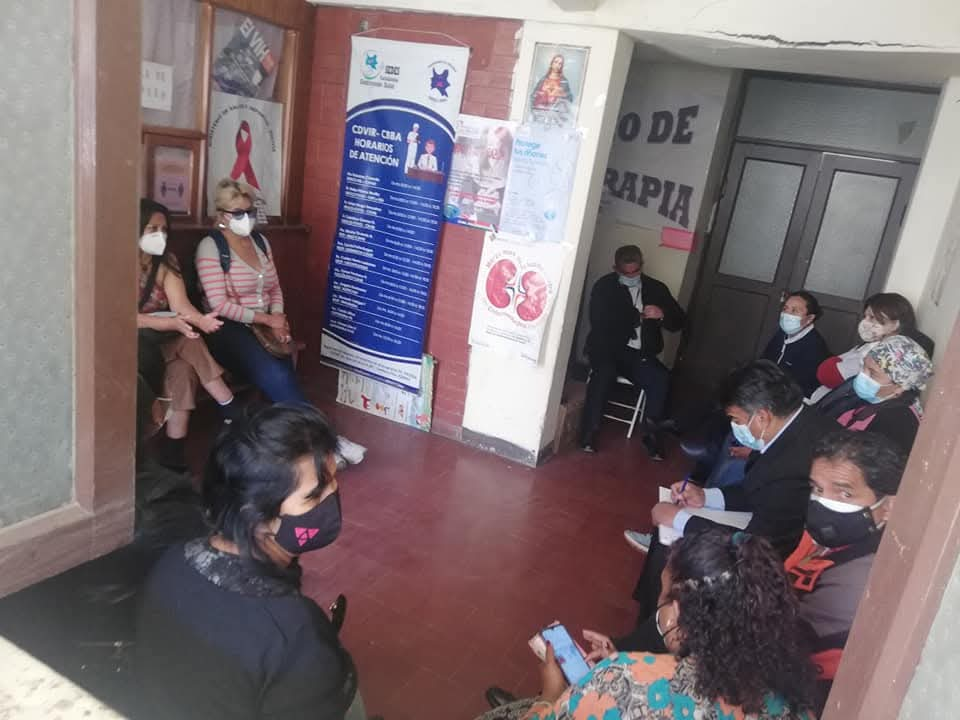

Nuestra Lucha, Nuestra Voz
Nuestra Misión
Fortalecer las capacidades y las habilidades de las trabajadoras sexuales, para reducir la violencia, el racismo y la discriminacion en el entorno laboral del trabajo sexual, a traves del reconocimiento del trabajo sexual en normativas legales.
Nuestra Visión
Ser una organización consolidada, que represente de forma legitima y legal a todas las trabajadoras sexuales en Bolivia.
Nuestra Historia
La Asociación WARMI A.M.T.S. nació el 19 de enero de 2020, en plena pandemia de COVID-19, como una respuesta urgente y colectiva frente a la crisis extrema que golpeó a las trabajadoras sexuales de Cochabamba. Mientras el país se cerraba, miles de mujeres quedaron sin ingresos, sin respaldo estatal y completamente expuestas a la violencia, la extorsión y el estigma. En medio de ese abandono, un grupo de mujeres —lideradas por Fitti Lino Terceros— decidió no quedarse de brazos cruzados. Se organizaron de forma autónoma, horizontal y sin intermediarios, unidas por la convicción de protegerse entre ellas, acompañarse y exigir el respeto de sus derechos humanos y laborales. El nombre WARMI, que significa mujer en quechua, refleja la identidad plurinacional, feminista y colectiva de nuestra organización. Hoy, WARMI A.M.T.S. reúne a más de 400 afiliadas, cuenta con personería jurídica y NIT, y se posiciona como una de las primeras asociaciones legalmente reconocidas en Bolivia que visibiliza el trabajo sexual como trabajo legítimo y digno. Entre nuestros principales logros destacan:  La descentralización de los servicios de salud (CDVIR) para garantizar atención integral y respetuosa a nuestras compañeras. La creación de campañas de sensibilización y talleres para romper prejuicios y reducir la violencia. Nuestra participación activa en RedTraSex (Red Latinoamericana y del Caribe de Trabajadoras Sexuales), fortaleciendo alianzas con organizaciones feministas, de salud y de derechos humanos a nivel local, nacional e internacional. Las visitas constantes, el acompañamiento jurídico, psicológico y el apoyo solidario a cada compañera que lo necesita. WARMI es más que una sigla: es la voz colectiva de mujeres que no piden permiso para existir, organizarse y luchar por un futuro donde ser trabajadora sexual no signifique ser invisible ni vulnerada.
Nuestros Logros
Un vistazo a nuestro recorrido y los hitos que hemos alcanzado gracias al esfuerzo colectivo.

Nuestro Equipo
Las personas que con su dedicación y esfuerzo impulsan el cambio todos los días.
Fitti Lino Terceros
Presidenta
Activista con amplia trayectoria en la defensa de los derechos humanos, especializada en la promoción y protección de los derechos de las trabajadoras sexuales. Es la responsable de la dirección estratégica y la incidencia política de la asociacion.
Laura
Vicepresidenta
Activista por los derechos de las trabajadoras sexuales. Brinda soporte clave en la dirección de la organización y es responsable de la coordinación y ejecución de los programas en terreno.

DR. Ivan Rivera
Asesor Medico
Médico profesional comprometido con nuestra causa, con amplia y reconocida experiencia en el campo de las enfermedades infectocontagiosas y tropicales. Su conocimiento y dedicación son un pilar fundamental para nuestro programa de salud.
Eli
secretaria
Activista feminista y pilar de nuestra organización. Eli no solo se encarga de la gestión y el apoyo administrativo como Secretaria, sino que también impulsa activamente nuestra lucha por la dignidad y los derechos de todas las mujeres

Maria de los Angeles Quispe Cadima
Psicologa
Combina su sólida experiencia como psicóloga con una profunda vocación de activista feminista. Su especialidad es la defensa y el acompañamiento de comunidades vulnerables, garantizando un apoyo que sana y empodera.

aby
Apoyo Social
Estudiante de Trabajo Social comprometida con la lucha por los derechos de las mujeres. Aby aporta su energía y conocimientos académicos, aplicándolos directamente en la defensa y el apoyo a las trabajadoras sexuales de nuestra comunidad.
jhenny
Apoyo Social
Como estudiante de Trabajo Social, Jheny une la teoría con la práctica en su incansable defensa de los derechos de las mujeres. Su apoyo es fundamental en el acompañamiento y la asistencia directa a la comunidad de trabajadoras sexuales.
jhorel Mena
sex symbol
no hay mucho que decir es el alma de todo el equipo sin el todo warmi cae en la anarquia.